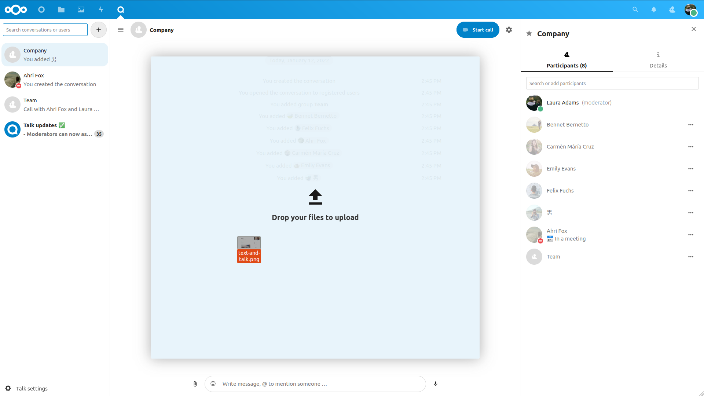

Základy Nextcloud Talk
Nextcloud Talk vám umožňuje chatovat a mít videohovory na svém vlastním serveru.
Chaty a hovory se odehrávají v konverzacích. Těch je možné vytvářet libovolné množství. Konverzace se dělí na dva typy:
Konverzace jednoho s jedním. Toto je kdy máte soukromý chat nebo hovor s jiným uživatelem Talk. Do této konverzace není možné přidávat další osoby ani ji sdílet prostřednictvím odkazu. Tento přímý typ konverzace je možné zahájit vyhledáním druhého uživatele v liště hledání a poté kliknutím na jeho jméno.
Skupinové konverzace. Společně s osobou, která konverzaci vytvořila, může ve skupinové konverzaci být ještě libovolný počet dalších lidí. Skupinovou konverzaci je možné veřejně sdílet prostřednictvím odkazu a tak se k hovoru mohou připojit i externí hosté. Může být také zařazena na seznam, takže ostatní lidé z vámi využívaného Nextcloud serveru se mohou připojit ke konverzaci.
Vytvoření chatu
Přímý chat jednoho s jedním je možné vytvořit vyhledáním jména uživatele, názvu skupiny nebo okruhu a kliknutím na něj. V případě jediného uživatele je okamžitě vytvořena konverzace a můžete začít komunikovat. V případě skupiny či okruhu je třeba zadat název konverzace a nastavení a pak teprve půjde vytvořit a přidat účastníky.

Pokud chcete vytvořit vlastní skupinovou konverzaci, klikněte na tlačítko plus vedle kolonky pro vyhledávání. Poté zadáte název pro konverzaci a vyberete, zda má být otevřená externím uživatelům a zda ji uvidí ostatní uživatelé na serveru a budou se do ní moci připojit.
Ve druhém kroku přidáte účastníky a dokončíte vytvoření konverzace.

Vytváření konverzace je možné kdykoli zrušit kliknutím mimo bílou oblast nabídky.

Sdílení souborů v chatu
Soubory je možné sdílet v chatu třemi způsoby.
Zaprvé je jednoduše můžete přetáhnout na chat.
Zadruhé soubor můžete vybrat z Nextcloud Soubory nebo správce souborů tlačítkem s malou kancelářskou sponkou a vybráním odkud chcete soubor zvolit.


Je možné přidávat další a další soubory a poté se rozhodnout je sdílet.

Všichni účastníci si budou moci kliknutím na soubory je zobrazit, upravit nebo stáhnout – bez ohledu na to, zda mají uživatelský účet. Těm, kteří ho mají, bude soubor automaticky nasdílen, externí hosté je obdrží jako sdílení veřejným odkazem.

Vkládání emotikon
Emotikony je možné přidávat pomocí výběru vlevo od kolonky pro zadávání textu.

Odpovídání na zprávy a další
Na zprávu je možné odpovědět pomocí šipky, která se objeví, když ukazatelem myši najedete na zprávu.

V nabídce … je možné také zvolit soukromou odpověď. Toto otevře chat jednoho s jedním.
Je zde také možné vytvořit přímý odkaz na zprávu nebo ji označit jako nepřečtenou, abyste se k ní při přístím vstupu do chatu vrátili. Pokud se jedná o soubor, můžete si ho zobrazit v Souborech.
Správa konverzace
Ve vámi založených nových konverzacích jste vždy moderátory. V seznamu účastníků je možné udělit ostatním účastníkům takové oprávnění prostřednictvím nabídky … vpravo od jejich jména, přiřazovat jim uživatelsky určená oprávnění nebo je odebrat z konverzace.
Changing permissions of a user that joined a public conversation will also permanently add them to the conversation.

Moderators can configure the conversation. Select Conversation settings from the gear menu of the conversation on the top to access the settings.

Zde je možné nastavit popis, přístup hostům, zda je konverzace viditelná ostatním na serveru a další.

Zahájení hovoru
Když se nacházíte v konverzaci, můžete kdykoli zahájit hovor tlačítkem Zahájit hovor. Ostatní účastníci budou upozorněni a mohou se k hovoru připojit. Pokud už hovor začal někdo jiný, tlačítko se změní na zelené Připojit se k hovoru

V průběhu hovoru můžete ztlumit svůj mikrofon a vypnout přenos obrazu z vaší kamery pomocí tlačítek na pravé straně horní lišty, nebo pomocí zkratek M pro ztlumení zvuku a V` pro videa. Při ztlumení (a naopak) je také možné použít mezerník. Když jste ztlumení, stisknutí a držení mezerníku to zruší, takže můžete mluvit, dokud ho držíte. Pokud nejste ztlumení, stisknutí mezerníku vás ztlumí, dokud ho neuvolníte.
Přenos obrazu z vaší kamery je možné skrýt (užitečné při sdílení obrazovky) pomocí drobné šipky nad proudem videa. Nazpět opět pomocí této šipky.
K nastavením se dostanete z nabídky … v horní liště, kde je možné zvolit jinou webovou kameru, mikrofon a další.


Změna pohledu v hovoru
Zobrazení je možné během hovoru přepínat mezi tím s někým vyzdviženým a zobrazením v mřížce a to prostřednictvím malé ikony čtyř bloků vpravo nahoře. V mřížce jsou všichni ve stejné velikosti a pokud se někteří nevejdou na obrazovku, objeví se vlevo a vpravo tlačítka, pomocí kterých je možné se mezi nimi přesouvat.

Vyzdvižené zobrazení ukazuje řečníka většího a ostatní v řádku pod ním. Pokud se lidé nevejdou na obrazovku, vlevo a vpravo se objeví tlačítka, kterými se mezi nimi můžete přesouvat.